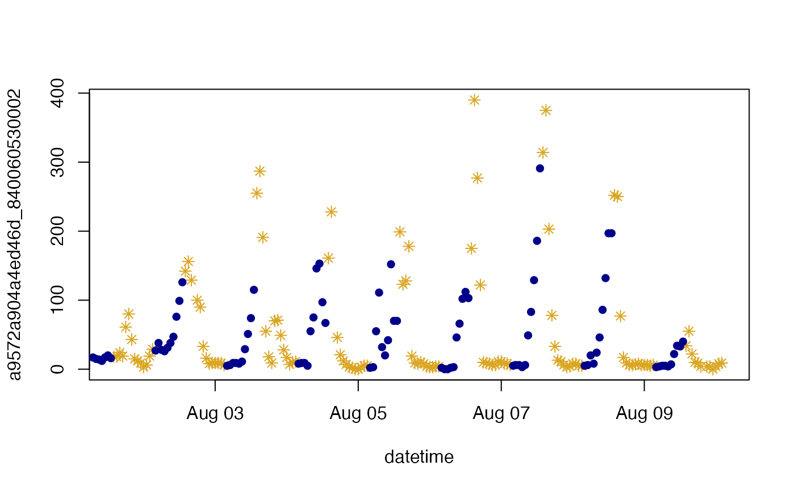

Calculate the local time at the target location, as well as sunrise, sunset and solar noon times, and create several temporal masks.
The returned dataframe will have as many rows as the length of the incoming
UTC time vector and will contain the following columns:
localStdTime_UTC -- UTC representation of local standard time
daylightSavings -- logical mask = TRUE if daylight savings is in effect
localTime -- local clock time
sunrise -- time of sunrise on each localTime day
sunset -- time of sunset on each localTime day
solarnoon -- time of solar noon on each localTime day
day -- logical mask = TRUE between sunrise and sunset
morning -- logical mask = TRUE between sunrise and solarnoon
afternoon -- logical mask = TRUE between solarnoon and sunset
night -- logical mask = opposite of day
timeInfo(time = NULL, longitude = NULL, latitude = NULL, timezone = NULL)
| time | POSIXct vector with specified timezone, |
|---|---|
| longitude | Longitude of the location of interest. |
| latitude | Latitude of the location of interest. |
| timezone | Olson timezone at the location of interest. |
A dataframe with times and masks.
NOAA used the reference below to develop their Sunrise/Sunset
https://gml.noaa.gov/grad/solcalc/sunrise.html and Solar Position
https://gml.noaa.gov/grad/solcalc/azel.html Calculators. The algorithms include corrections for atmospheric refraction effects.
Input can consist of one location and at least one POSIXct times, or one POSIXct time and at least one location. solarDep is recycled as needed.
Do not use the daylight savings time zone string for supplying dateTime, as many OS will not be able to properly set it to standard time when needed.
The localStdTime_UTC column in the returned dataframe is primarily for
internal use and provides an important tool for creating LST daily averages
and LST axis labeling.
NOAA notes that “for latitudes greater than 72 degrees N and S, calculations are accurate to within 10 minutes. For latitudes less than +/- 72 degrees accuracy is approximately one minute.”
Internal functions used for ephemerides calculations were copied verbatim from the https://cran.r-project.org/package=maptools package source code in an effort to reduce the number of package dependencies.
Compared to NOAA's original Javascript code, the sunrise and sunset estimates from this translation may differ by +/- 1 minute, based on tests using selected locations spanning the globe. This translation does not include calculation of prior or next sunrises/sunsets for locations above the Arctic Circle or below the Antarctic Circle.
US EPA regulations mandate that daily averages be calculated based on "Local Standard Time" (LST) (i.e. never shifting to daylight savings). To ease work in a regulatory context, LST times are included in the returned dataframe.
Meeus, J. (1991) Astronomical Algorithms. Willmann-Bell, Inc.
Sebastian P. Luque spluque@gmail.com, translated from Greg Pelletier's gpel461@ecy.wa.gov VBA code (available from https://ecology.wa.gov/Research-Data/Data-resources/Models-spreadsheets/Modeling-the-environment/Models-tools-for-TMDLs), who in turn translated it from original Javascript code by NOAA (see Details). Roger Bivand roger.bivand@nhh.no adapted the code to work with sp classes. Jonathan Callahan jonathan.callahan@gmail.com adapted the source code from the maptools package to work with MazamaTimeSeries classes.
library(MazamaTimeSeries) Carmel <- Carmel_Valley %>% mts_filterDate(20160801, 20160810) # Create timeInfo object for this monitor ti <- timeInfo( Carmel$data$datetime, Carmel$meta$longitude, Carmel$meta$latitude, Carmel$meta$timezone ) t(ti[6:9,])#> 6 7 #> localStandardTime_UTC "2016-08-01 04:00:00" "2016-08-01 05:00:00" #> daylightSavings "TRUE" "TRUE" #> localTime "2016-08-01 05:00:00" "2016-08-01 06:00:00" #> sunrise "2016-08-01 06:13:45" "2016-08-01 06:13:45" #> sunset "2016-08-01 20:12:10" "2016-08-01 20:12:10" #> solarnoon "2016-08-01 13:13:13" "2016-08-01 13:13:13" #> day "FALSE" "FALSE" #> morning "FALSE" "FALSE" #> afternoon "FALSE" "FALSE" #> night "TRUE" "TRUE" #> 8 9 #> localStandardTime_UTC "2016-08-01 06:00:00" "2016-08-01 07:00:00" #> daylightSavings "TRUE" "TRUE" #> localTime "2016-08-01 07:00:00" "2016-08-01 08:00:00" #> sunrise "2016-08-01 06:13:45" "2016-08-01 06:13:45" #> sunset "2016-08-01 20:12:10" "2016-08-01 20:12:10" #> solarnoon "2016-08-01 13:13:13" "2016-08-01 13:13:13" #> day "TRUE" "TRUE" #> morning "TRUE" "TRUE" #> afternoon "FALSE" "FALSE" #> night "FALSE" "FALSE"# Subset the data based on day/night masks data_day <- Carmel$data[ti$day,] data_night <- Carmel$data[ti$night,] # Build two monitor objects Carmel_day <- list(meta = Carmel$meta, data = data_day) Carmel_night <- list(meta = Carmel$meta, data = data_night) # Plot them plot(Carmel_day$data, pch = 8, col = 'goldenrod')